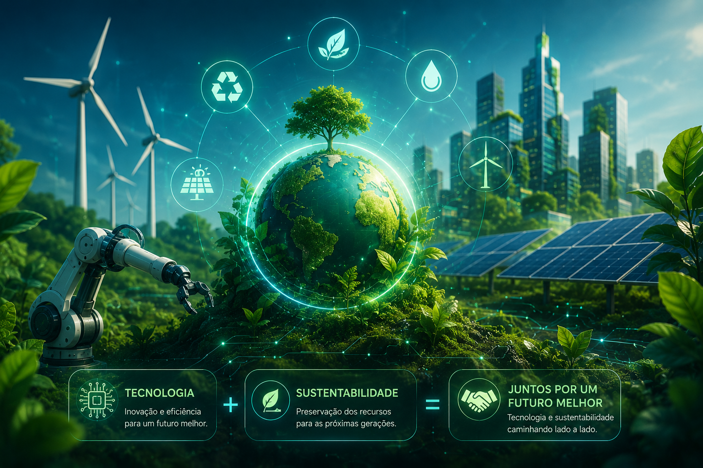

Transformando resíduos em um futuro sustentável
A EcoTech Recicle conecta pessoas, empresas e iniciativas para promover a reciclagem e contribuir para um planeta mais limpo.

Missão
A EcoTech Recycle recicla recondiciona eletrônicos, reduzindo o descarte e incentivando a economia circular.
Visão
Tornar-se referência regional em reciclagem tech, inovando com qualidade e um app para expandir o atendimento.
Valores
A empresa faz a coleta e destinação correta do lixo eletrônico, recondiciona o que dá e recicla o resto. Também terá um programa de pontos pra recompensar quem descartar os equipamentos corretamente.
Reciclar é transformar
A reciclagem contribui para a redução de resíduos, preservação dos recursos naturais e construção de um futuro mais sustentável.
♻️ Reciclagem
Incentivamos o reaproveitamento de materiais e a redução do desperdício.
🌱 Sustentabilidade
Buscamos soluções que contribuam para a preservação do meio ambiente.
🤝 Parcerias
Conectamos empresas e pessoas em torno de objetivos sustentáveis.
Segmento de Atuação Ecotech
A EcoTech Recycle LTDA atua no segmento de gestão e reciclagem de resíduos eletrônicos, com foco na coleta, recuperação, recondicionamento e destinação adequada de equipamentos eletrônicos, além da comercialização de produtos e componentes reutilizáveis.
♻️ Coleta de Eletrônicos
Equipamentos que ainda podem ser utilizados passam por avaliação e reparos, sendo recuperados e disponibilizados novamente com qualidade e garantia.
♻️ Reciclagem e reaproveitamento
Materiais e componentes que não podem ser recuperados são separados para reaproveitamento ou encaminhados para reciclagem adequada.
🔧 Recuperação e recondicionamento
Equipamentos que ainda podem ser utilizados passam por avaliação e reparos, sendo recuperados e disponibilizados novamente com qualidade e garantia.
🤝 Parcerias sustentáveis
Desenvolvemos parcerias com empresas e instituições para fortalecer campanhas ambientais, programas de fidelidade e ações de sustentabilidade.